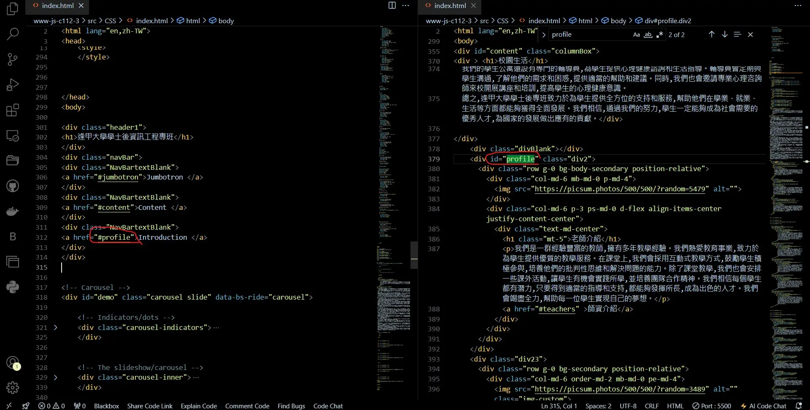
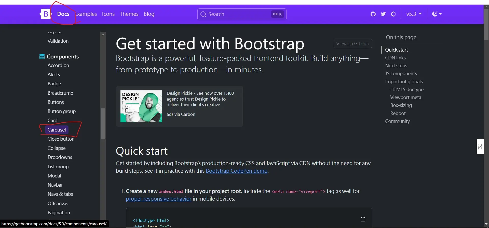

設計元素採用逢甲校網的主要顏色
分別為
暗紅色 白色 淺灰色 深灰色 黑色
共五色

外觀架構方向
採用v08排版要求

外觀樣式需要有
導覽列
大面板(jumbotron)
老師介紹
課表
課程介紹
頁尾區塊

部分排版方式 參照 W3Schools 套版 及 v08排版架構做延伸變化

部分套版格式採用Bootstrap元件框架
其中採用Bootstrap

Card 卡片 樣式元件
可以用來顯示各種內容或是介紹人事物

Carousel 輪播 樣式元件
可以用來展示多張圖片或其他內容
讓它們自動或手動地切換顯示
且可以設置輪播的速度、控制按鈕和指示器，以及添加過渡效果，讓網頁更生動和引人注目
Collapse 摺疊 樣式元件
可以隱藏或顯示內容區塊以節省空間或改善使用者體驗
透過點擊按鈕或其他元素來觸發折疊效果
使得內容可以動態展開或收合

Tables 表格 樣式元件
樣式可以輕鬆地設計和美化表格
包括調整表格的樣式、邊框、背景色以及文字尺寸等
這使得表格在網頁中顯示更清晰、統一和易讀

Stretch link 延伸連結 樣式元件
可以使鏈接填滿其包含元素的整個區域
使得點擊區域更大、更易於觸發，提升使用者體驗
網頁排版變化樣式參照逢甲大學官網
當下滑頁面時就會有不同排版格式顯現

及不同方向的連結區塊
Updating...
大部分都用div 區塊元素 包裝內容

以便於做部分模組化修改
網頁顏色元素採用
暗紅色 RGB(154,0,0)
白色 RGBA(255, 255, 255, 0.868)
淺灰色 RGB(168,168,168)
深灰色 RGBA(108, 117, 125)
黑色 RGB(0,0,0)
設定導覽列在網頁向下滑動時
只留下下動態浮動導覽列
設定z-index
當z-index 值越大時
代表該區塊會堆疊在越上層
z-index 值越小時
代表該區塊就會堆疊越下層
z-index 初始值為0
設定top為0代表網頁元素的位置
top: 0 代表元素位置在網頁的最上方
設定position為sticky
讓導覽列在網頁下滑時
會跟隨著網頁移動
並固定在上方
就像名稱sticky一樣牢牢黏住
設定內頁連結
藉由 a href= "#(連接的元素id)" 可實現頁內跳轉功能href屬性中的值以#開頭，後接目標元素的ID
表示連結將跳轉到具有對應ID的元素位置
置入Bootstrap Carousel 輪播圖 元件
到Bootstrap 官網 點進Docs 並找到Components裡面的Carousel 元件
找到喜歡的款式樣式並複製程式碼
在把複製的程式碼貼到IDE編輯器裡
設定欄位
把內文內容放進一個div自訂容器後
並設定float:left 讓物件由左而右排序
由於有4個內文分別在獨立的div裡面所以藉由css
限制每個div欄位大小 width:25%
動畫效果 藉由 .columnBox div:hover 觸發
分別在有hover 無hover時加入transition:(數字s) 這樣可讓動畫流暢
設定響應式網格
藉由bootstrap 網格系統
設置 col-(數字)數字代表螢幕和容器所佔據比例
Bootstrap把網頁分為12列,如果數字是3 即 col-3 比例會是1/4
來達成響應式功能